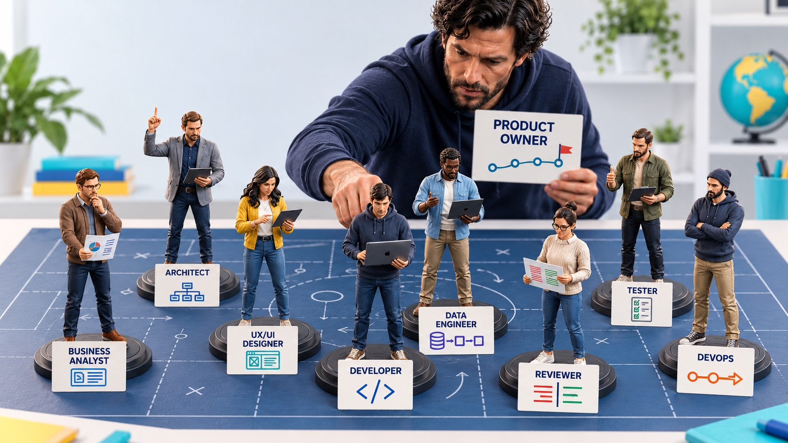
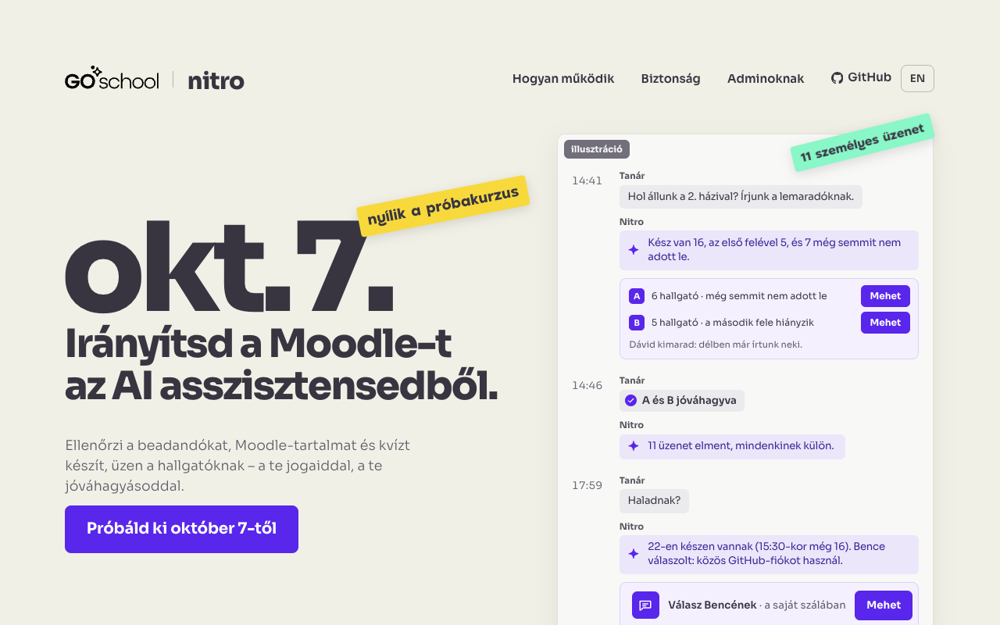

BME Oktatói Klub · 2026. október 6.
AI az oktató kezében.
Mit adunk át az AI-nak, és mi marad a mi felelősségünk?
Tamási Árpád · oktató, a GoSchool alapítója · a nyílt forráskódú Moodle Nitro fejlesztője
Az előadás Moodle-kurzusamoodle.goschool.ai
Miről lesz szó?
A jelentkezéskor beküldött kérdéseitek alapján
41%
Kognitív kiszervezés
Honnan tudhatom, hogy a hallgató használja az agyát? · Mit tehetek, hogy AI mellett is tanuljanak?
31%
Az oktató hatékonysága
Miben segíthet az AI nekem, oktatónak?
18%
Biztonság
Hová megy az adat, és megbízhatok-e az eredményben?
10%
Egyéb
A beszélgetésben
01 / 03
Honnan tudhatom, hogy a hallgató használja az agyát?
EEG-kísérlet esszéírás közben
MIT Media Lab, 2025 · 54 bostoni egyetemista
Gyengébb volt a felidézés és a megélt szerzőség is.
Szűk esszéfeladat, kis minta, preprint: nem általános tanulási hatásvizsgálat.
Kosmyna és mtsai, Your Brain on ChatGPT, arXiv preprint, v2
04Mit csinálnak az AI-val?
Közel 40 000 hallgatói üzenet a GoSchoolban
Magyarázat kérése, majd lezárás
Feladat vagy leadandó átadása
Több kör, de a szintézis az AI-nál marad
Saját gondolat bekerül és próbára kerül
Jobb házi, gyengébb dolgozat
26 811 kínai középiskolás · 30 hónap
+18%
Házi feladat pontszáma
−30%
Házira fordított idő
−20%
Havi zárthelyi
fél éven belül
−24%
Felvételi vizsga
a másikon −18%
Kevesebb idő alatt jobb házi. A tanulást szervezték ki?
Egy kínai megye középiskolásai, munkaanyag.
Strömberg, Lei, Wu, CEPR DP21577, 2026
06A feladataink az eredményt jutalmazzák.
mert eddig csak azt láttuk
Mi lenne, ha a folyamatot jutalmaznánk?
02 / 03 · futó kísérlet
Mit kell tudnia annak, aki magának ír programot?
Advanced Programming
28 hallgató
Saját szoftver, a saját szakterületükre.
LLM-kurzus oktatóknak
16 oktató és kutató
Saját kutatási eszköz, a saját adataikra.
Szoftvert készíteni önállóan.
A fejlesztést kézben tartani.
Ezért ebben a két kurzusban nem kódolást vagy programnyelvet tanítok.

Első nap, mindkét kurzuson
09Ugyanaz az AI, más emberi részvétel
Kipróbálásvibe coding
„Csinálj nekem egy Minecraftot.”
Nem tudom pontosan, mit akarok.
Ellenőrzött építésagentic engineering
Tudom, mit akarok.
Résztvevők és projektjeik
Mindenki a saját problémáján dolgozik
Advanced Programming · hallgatók
- Személyes pénzügyi tervező banki kivonatokból
- Készséghiány-kereső pályakezdő adatelemzőknek
- Közép-európai légiforgalom adattárháza
- Figyelmetlen kérdőívkitöltők kiszűrése
- Nyomozós játék LLM-vezérelt szereplőkkel
- „Mit vegyek fel ma?” LLM-alapú öltözetajánló
- …
LLM-kurzus · oktatók és kutatók
- DP-tábori IRO-akták adatbázisa
- Interjúk és médiatartalom LLM-es elemzése
- A pszichológiáról alkotott laikus tudás
- Az „informalitás” fogalmának változása
- Jövőorientáció mérése nyílt végű válaszok gépi kódolásával
- Vegyes kutatási archívum egységes adatbázisba
- …
A két kurzus projektlistájából · nevek kitakarva
Hétről hétre, a saját projektjükön
Jól definiált?
Bevonódott, vagy csak rábólintott?
Alakított rajta a gép tanácsára?
Kipróbálta a kockázatos pontokat?
Hetekig, körről körre
A hajrá: mit csinált ő, és mit a gép
A cél: a végén, nyilvánosan
Mind a 44 projektet követem, és segítek, ahol elakadnak.
Ki olvassa el mindezt 150 hallgatónál?
600
ellenőrzés egy beadandónál: 150 hallgató × 4 lépés
03 / 03
Miben segíthet az AI nekem, oktatónak?
Hová ment az időm?
Tananyag és feladatok
34%
Kommunikáció
20%
Beadások átnézése
13%
Értékelés és visszajelzés
11%
Hallgatói munka elemzése
9%
Egyéb
9%
Eszközök, szkriptek
4%
Ugyanaz a két kurzus és 1031 kérés · a szünetek nélkül
A kiszervezés ereje a saját munkámban
Két saját kurzusom, 2026. szeptember · 60 óra bruttó
15 ezer szót írtam én
655 ezer szót olvasott el az AI
681 ezer szót írt meg az AI
×89: minden szavamra 44 elolvasott és 45 megírt szó jutott.
Claude Code-átiratokból · az ismételt beolvasások nélkül
Mindenki egyéni üzenetet kap
„Szia! A Snake megjött, köszönöm. A Cassino még hiányzik, a határidő ma 20:00.”
az utolsó házi érdekel, azzal hol állunk?
aki nem adta be, annak menjen személyes
16-an mindkét részt beadták, 5-nél csak az első rész van bent, 7-nél semmi. Két változatban megírtam 11 személyes üzenetet. Még nem küldtem el, egy „mehet” kell hozzá.
mehet
Canvas: 11 személyes üzenet elküldve, egyenként
a későknek írj, hogy hétfő estig félpontért csnálják meg
Itt a tervezet 3 hallgatónak. Egyikük tegnap már kapott üzenetet és nem válaszolt, őt kihagyhatjuk, ha gondolod.
mehet [hallgató]nak is
ha megbuktatom, ne mondhassa, hogy nem szóltam
Canvas: 3 személyes üzenet elküldve, szabály elmentve
≈ 7 perc
ennyi volt a beszélgetés
Claude Code · Advanced Programming · 2026. szeptember 18.
Egyéni házi: spike a saját projekten
Rövid próba a projekt legkockázatosabb pontjára. Három a huszonnyolcból:
Címkézz fel kézzel egy kimaradt hónapot. Hány költést talál el a programod?
Ezer valódi kitöltőből hány tisztát jelöl hibásnak?
Harminc valódi modellhívásból hány megy át az ellenőrzőn?
nézd meg az összes projektet, és keresd meg a legnagyobb kockázatot
28 ügynök: projektenként a legnagyobb kockázat
Itt vannak, projektenként egy sor: mi a legnagyobb kockázat, és milyen rövid próbafeladat dönti el, hogy megáll-e.
ok, azért fikáztasd meg egy ellenséges elemzővel
Kellemetlen eredmény: a javaslatok nagyobb része nem igazi próba, csak feladatlista. Kijavítottam őket.
a planning logot átírtam, azt az agent írja, nézd meg
Rendben, a naplót az ágens vezeti, az AGENTS.md szabálya szerint. Mind a 28 leírást egységesítettem.
ok mehet ki
GitHub: 28 „Your spike” issue, mindenki megkapta a sajátját
mehet a kiírás a canvasra
Canvas: közlemény kint
≈ 60 perc
ennyi volt a beszélgetés
Claude Code · Advanced Programming · 2026. szeptember 28.
Csoportot jelölök ki, akik hasonlón dolgoznak
Azonos folyamat, csoportonként egy haladó és egy lemaradó.
kódkönyv, gépi kódolás, összevetés a kézivel
keresés, szűrés, kinyerés
letöltés kulcsszavakkal, relevanciaszűrés
séma, kinyerés, tábla, ellenőrzés
na akkor
nézd meg egyenként a projekteket és csoportosítsd aszerint, hogy kb ugyanaz a folyamat, amit végig kell csinálniuk
Elolvastam a repók README-jét, terveit és döntési naplóját. Öt folyamat jön ki, két projekt egyikbe sem fér bele.
na olyan csoportokat akarok, akik
1 egyforma feladatokat kell végezniük
2 van benne egyvalaki, akinek már van fogalma
3 van olyan is, aki le van maradva
Mind a négy csoportban nem teljesül egyszerre a három feltétel: kevés a haladó, és nem ott ülnek, ahol a lemaradók. Ez a legjobb beosztás, amit találtam.
1. Kódolás: kódkönyv, gépi kódolás, összevetés a kézivel
2. Szakirodalom: keresés, szűrés, kinyerés
3. Korpusz: letöltés kulcsszavakkal, relevanciaszűrés
4. Adatbázis: séma, kinyerés, tábla, ellenőrzés
[hallgató] nem tudja, mit csinál?
De, tudja, tévesen soroltam középre. Így az 1-es csoportban ketten tudják, mit csinálnak, és ez jó, mert kiegészítik egymást.
ok
tudunk nekik egy discussiont nyitni a githubon?
ennek a csoportnak
és azért van a csoport, hogy tudjátok egymást segíteni
valószínűleg azonos problémákba ütköztük
GitHub: 4 csoport-discussion kiposztolva, körlevél piszkozatban
≈ 48 perc
ennyi volt a beszélgetés
Claude Code · LLM-kurzus oktatóknak · 2026. szeptember 28.
Elkaptam egy vibe-olót
A kész szövegből nem látszott. A commit-naplóból igen.
van friss beadás?
Igen, egy új. Nem terv, hanem egy kész program leírása. A repóban csak a README van: a kódot feltöltötte, pár nappal később letörölte.
commit log?
Három commit: előbb a README, egy órával később a teljes kód egyben, kétezer sor, majd a kód törlése.
de gép csinálta?
Majdnem biztosan gép írta a kódot. Ez önmagában nem baj, a kurzus előírja az ágenshasználatot.
na szerintem egy ötletet megíratott, abból egy readme-t
Ez illik a bizonyítékokhoz: előbb volt a README, utána a kód. Ötlet, kifejtés, kód. Ez a törlést is megmagyarázza.
ne dicsérjük meg, amit a gép talált ki neki
Jogos, a dicséret olyasmire ment, amit nem ő talált ki. Kivettem, sokkal rövidebb lett.
mehet
GitHub: visszajelzés az issue-ban, „not yet”, határidő hétfő 20:00
≈ 22 perc
ennyi volt a beszélgetés
Claude Code · Advanced Programming · 2026. szeptember
Mi mindent csinálok az AI-jal
Tananyag és feladatok
- Előadásdiák minden alkalomra
- Az egyik kurzus anyagát a másikra igazítva
- Házik, Canvas-modulok, segédletek
- Kérdésváltozatok a saját projektjeikből
- Egyéni spike mindenkinek
Kommunikáció
- Kb. 90 személyes Canvas-üzenet
- 8 közlemény, 65 levélpiszkozat
- Fórum, GitHub-szervezet, issue-k
- Napi átfutás: új beadás, levél, kérdés
- Csoportok kijelölése
Átnézés és értékelés
- A napló egyezik-e a tervvel
- Ellenkezett-e a géppel, vagy csak rábólintott
- Pont és visszajelzés mindenkinek
- Ki hol tart, ki maradt le
- A commit-napló olvasása
Mire kötöttem rá?És nálatok?
Mit kell még kézzel csinálni?
Egy eszköz, ami leveheti a terhet
Moodle Nitro · nyílt forráskódú · nem pont ugyanígy, mint nálam, de ugyanerre


goschool-ai.github.io/moodle-nitro
Miből használhatom?
Claude
Ma, ezzel próbáltuk ki
A webes felületről vagy az asztali alkalmazásból.
Microsoft 365 Copilot
A teljes licenccel
A BME-nek ez ma nincs meg. Végig még nem teszteltük.
EdAI
Ebben a félévben tesztelhető, a következőben használható
A BME saját AI-felülete (edai.bme.hu), GoSchool-alapon. A Nitro ma még nincs benne.
Bekötés
Add MCP
Name
Moodle Nitro
URL
https://moodle.goschool.ai/local/nitro/mcp.php
Utána belépsz a Moodle-fiókoddal. Bármikor visszavonhatod.
Hová megy az adat?
Amit én használtam
Claude Code
Egyéni előfizetéssel, intézményi szerződés nélkül.
Intézményi szerződéssel
Microsoft 365 Copilot
A teljes licenc a BME-n ma nincs meg.
A BME saját felülete
EdAI (GoSchool)
GDPR-megfelelő. A Nitro ebben a félévben kerül bele.
Utána
Akár az egyetemen futó modellel: az adat ki sem megy.
egyre zártabb
Ha kipróbálnád
A homokozóban
moodle.goschool.ai: egy külön próba-Moodle. Saját kurzust kapsz kitalált hallgatókkal. Október 7-től, kb. 10 perc.
- Regisztrálj, és megkapod a próbakurzusodat.
- Kösd össze Claude-dal.
- Kérdezd meg: „Milyen kurzusaim vannak?”
- Írass át egy feladatot, és nézd meg az előnézetet.
goschool-ai.github.io/moodle-nitro
A saját Moodle-ödön
A plugint a BME rendszergazdája teheti fel.
Nyílt forráskódú, a kód és a telepítési útmutató a GitHubon van.
github.com/goschool-ai/moodle-nitro
Valódi kurzuson csak intézményi jóváhagyás után.
„A civilizáció úgy halad előre, hogy egyre több fontos műveletet tudunk elvégezni anélkül, hogy gondolkodnánk rajtuk.”
Alfred North WhiteheadAn Introduction to Mathematics, 1911
28Ne álljunk ellen a kiszervezésnek.
Használjuk az erejét.
Mit csinál meg az AI a hallgatóidnak?
beszélgessünk